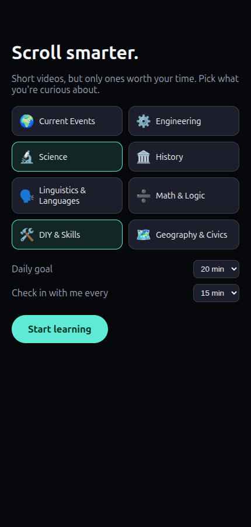
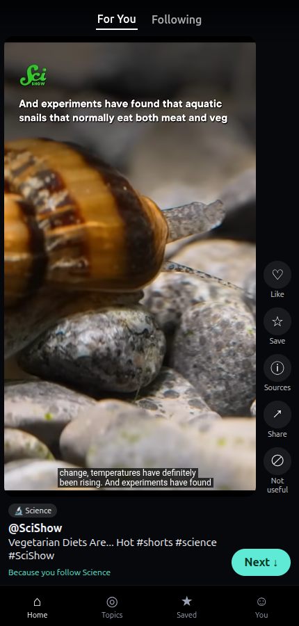
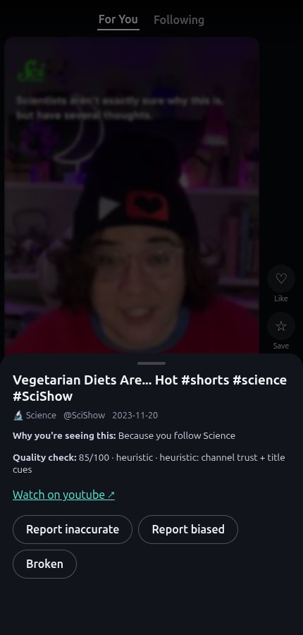
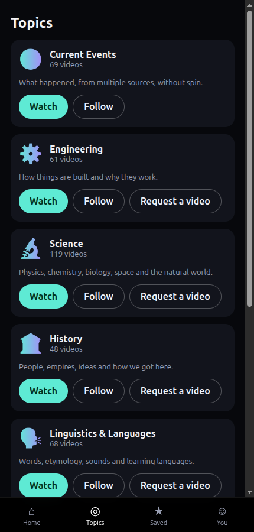
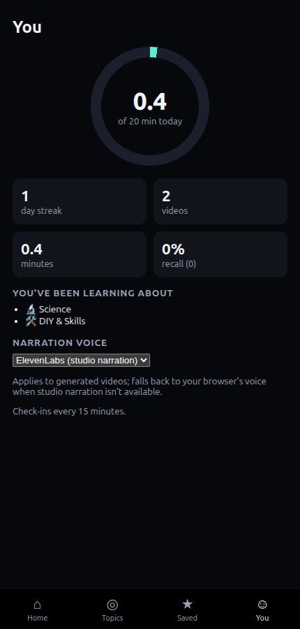
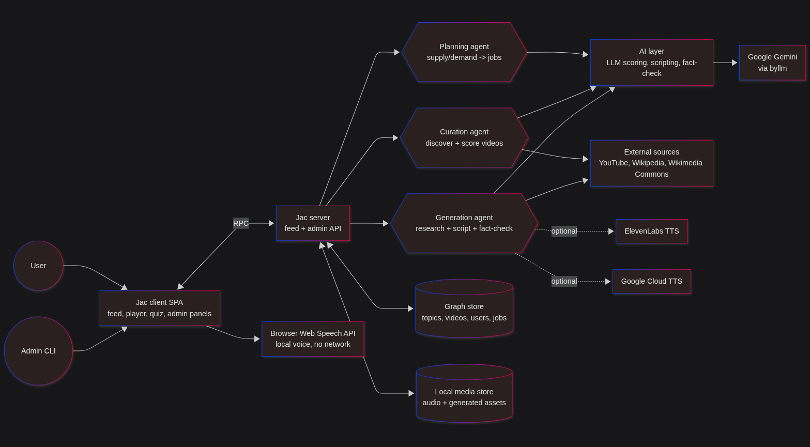

A TikTok-style vertical video feed where every video is worth your time: science, engineering, history, languages, DIY and balanced news — curated and fact-checked, not optimised to keep you scrolling forever.





Ranking favours quality, interest and topic variety over raw watch time, with daily goals, session check-ins and a take-a-break screen.
Curated YouTube Shorts from ~60 hand-picked educational channels, plus SmartTok's own ~60s generated explainers, fact-checked against what they cite.
A Sources sheet on every video shows why it was recommended, a quality score and, for generated videos, the Wikipedia sources and image credits behind it.
Every browser gets a guest account automatically — pick topics and SmartTok remembers your goals, streak and saves.

The catalog (topics, videos, channels) lives on a shared graph; each user has a profile node tracking what they've watched. A ranking walker scores and diversifies a feed on every request. AI runs only on the server, only for background work: scoring new videos and running a research agent that reads Wikipedia, writes a script, fact-checks each claim against its sources and revises before publishing.